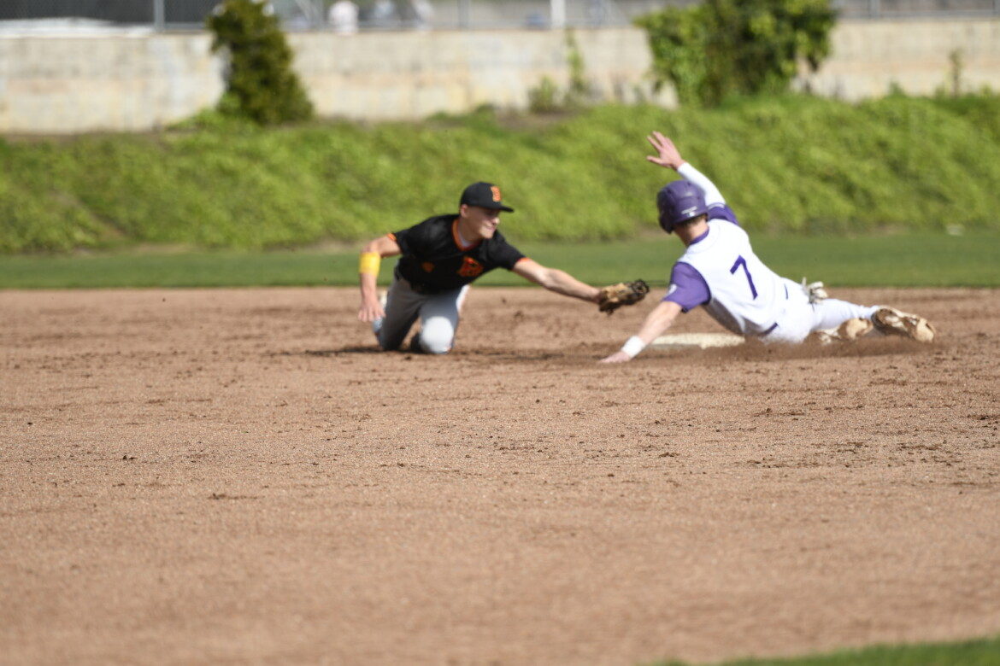
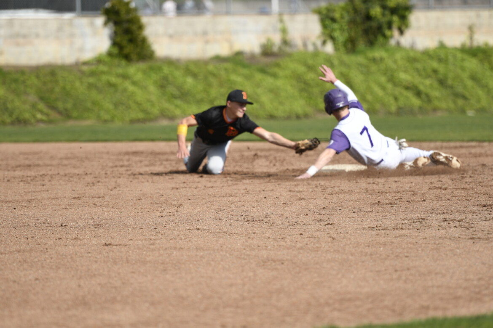

I had a great on the Piedmont baseball team, playing on the team as our starting catcher. I put up really good stats and was able to end with a .302 batting average. Our team was able to make it to the playoffs as the 8 seed and win in the first and second round, upsetting the 1 seed in the second round. After those two games we would end up losing in the Semi-Finals to Justin-Siena by 1 run. Although we ended up losing, it was a great run and a really fun year where we proved a lot of people wrong.
 

These two photos are from a couple of my games over the year. The image on the left is an image from our first round playoff game that actually lasted 2 days and went 12 innings due to it getting to dark on the first day of the game. The second photo is me playing against Berkeley and stealing a base with a really good slide to avoid the tage by the shortstop.